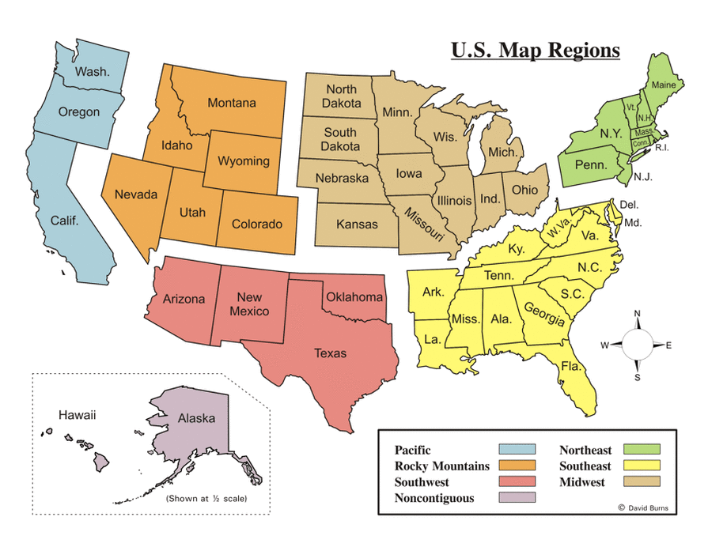

ABOUT THE PROJECT
Discussions regarding the cultural makeup of the United States of America have been varied, thorough, and encompassing of the vast political, cultural, and ideological makeup of this union of states. While much of this conversation is with regards to existing cultural groups, I believe there is a area of study not often observed or discussed. In the United States, regional segmentation has been occurring for centuries, with distinctions being made amongst individuals of the same nation based on characteristics associated with these areas. These distinctions are so pronounced in some cases that it often resembles the differences found in separate cultures. So the question remains; does the regional separation of these disunited states constitute cultural divide, or is this simply a case of a broadening of American culture?
This ethnographic and cultural analysis will rely upon deciding upon a set of criteria can be used to open a conversation on whether or not a Southerner and a Midwesterner are members of related, yet distinct cultures. A thorough dive into what constitutes a culture, the cultural values of residents of these regions, as well as previous research on the topic will be the major elements of this research.
Below you will find the results of a survey where individuals were given the opportunity to define their region themselves.
THE REPORT
CONCLUSIONS
While the information shown above is fascinating and certainly highlights the divisions that exist between the geographic regions of the United States, an overall consensus on whether or not these regionalism can be considered cultural aspects is inconclusive.
The survey was only made up of about 30 responses, with a strong bias towards those living in the Southeast. This makes sense given the main body of surveyed persons being located at the University of Alabama, a state school located in that region. Further issues when considering the conclusivity of the study arises from the fact that only college-aged students (aged 18-21) partook in the survey, almost certainly tilting the results
However,